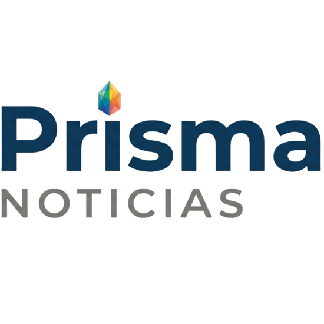
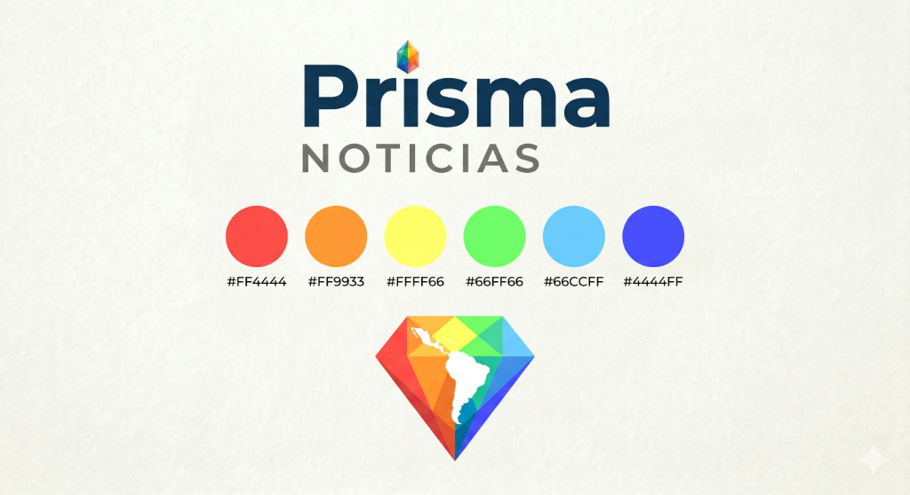
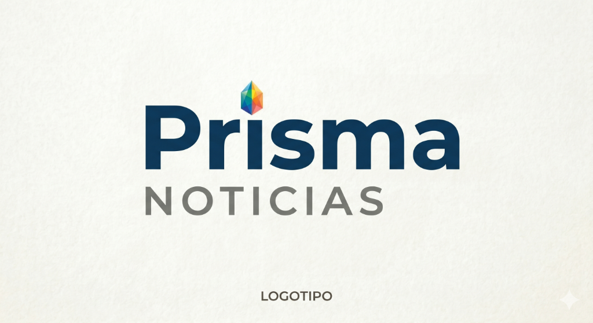

Prisma Noticias
by Arandu Labs

Prisma Noticias es un kiosco digital y agregador inteligente inspirado en la transparencia informativa de Ground News. Compara la misma noticia bajo diferentes tendencias políticas, descubre puntos ciegos de cobertura y visualiza noticias regionales. Privacidad total, sin algoritmos ni registros.
Multicolor
Prisma Editorial
Sin Sesgo
Comparativa Real
100% Libre
Sin Rastreadores

Explora las portadas del día y accede a las publicaciones impresas de forma visual e intuitiva.
Reúne información en tiempo real procedente de miles de agencias locales, nacionales e internacionales.
Lee la misma noticia cubierta por diferentes diarios de izquierda, centro y derecha en paralelo y contrasta las narrativas.
Descubre qué historias están siendo ignoradas por la izquierda o por la derecha y evita sesgos de omisión involuntarios.
Cobertura especializada del ecosistema informativo de LATAM. Accede a los medios de comunicación más relevantes de la región.
Explora lo que ocurre en tu provincia o ciudad, filtrando cabeceras locales junto a grandes medios globales.
Prisma Noticias recopila noticias procedentes de múltiples cabeceras de toda América Latina. Compara la línea editorial de los principales periódicos de tu región y desglosa los acontecimientos diarios con filtros de ubicación precisos para entender la política local desde diversos puntos de vista.

Descarga Prisma Noticias de forma gratuita en tu dispositivo Android a través de Google Play Store.
Personaliza tu feed indicando tus temas preferidos, países, provincias y visualiza el sesgo de las noticias.
Haz clic en cualquier artículo para ver cómo lo cubren otros diarios y esquiva la manipulación algorítmica.